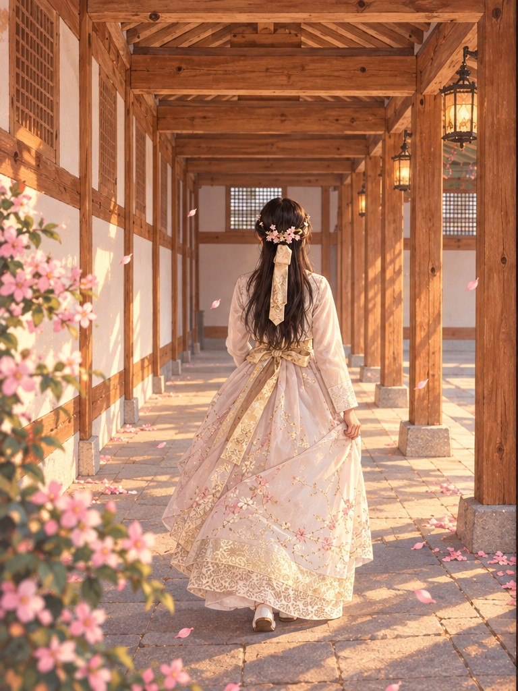
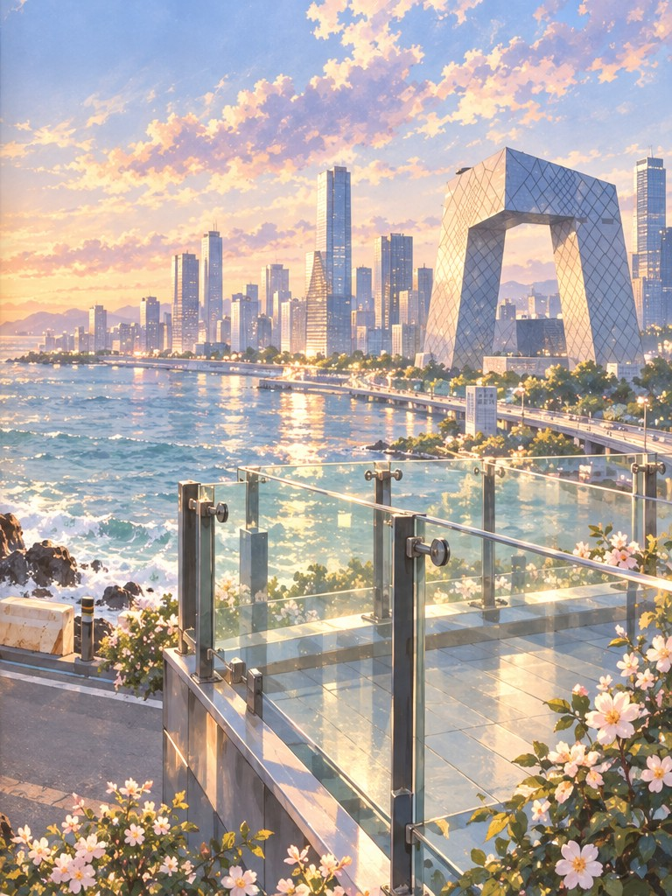

A WARM JOURNEY
暖风向东
双页展开暖风
01 — 07风吹过衣袖
也吹亮了旅途
旅 行 绘 本
暖风向东
宫墙、街巷、海岸
和被光温柔接住的时刻
有些旅行，
后来记住的不是路线，
而是那天风的温度。
AS THE TEMPERATURE OF LIGHT.
01 · 暖日
02 · 心愿

03 · 回廊
04 · 街灯
05 · 海风

0506 · 灯影
07 · 礼物
完愿每一次出发，
愿每一次出发，
都有暖风同行。
十四段影像的动画绘本重述
FIRST ANIMATED EDITION · 2026
A WARM JOURNEY
东行手记